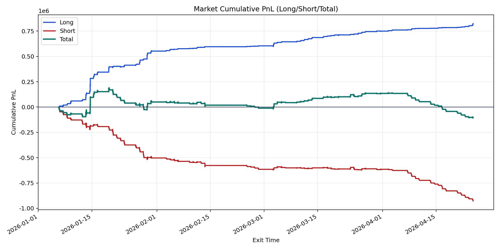
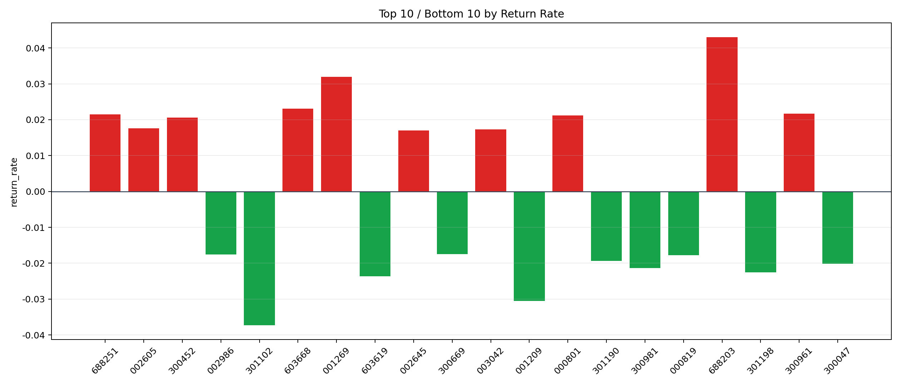

| repo_root | /home/haoranyou/data/output/alpha0.4_1w_5s_3ticks |
|---|---|
| period_months | 12 |
| period_label | 2026-01-06_to_2026-04-24 |
| start_time | 2026-01-06 09:50:12 |
| end_time | 2026-04-24 14:59:55 |
| n_trades | 152464 |
| n_symbols | 2272 |
| total_pnl | -101767.29585000036 |
| long_total_pnl | 824035.6745000001 |
| short_total_pnl | -925802.9703500005 |
| total_entry_notional | 1431633663.0 |
| long_entry_notional | 309711499.0 |
| short_entry_notional | 1121922164.0 |
| total_return_rate | -7.108473241453835e-05 |
| long_return_rate | 0.0026606557301251514 |
| short_return_rate | -0.000825193582992626 |
| top_symbols_by_return | ["688203", "001269", "603668", "300961", "688251", "000801", "300452", "002605", "003042", "002645"] |
| bottom_symbols_by_return | ["301102", "001209", "603619", "301198", "300981", "300047", "301190", "000819", "002986", "300669"] |

